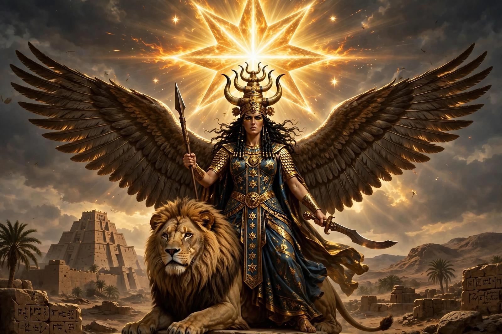

From Wikipedia, the free encyclopedia
| Inanna | |
|---|---|
| Affiliation | Mesopotamian mythology; Sumerian goddess of love, sex, war and political power |
| Akkadian form | Ishtar |
| City | Uruk |
| Symbols | The eight-pointed star; the lion; the reed-bundle emblem |
| Consort | Dumuzi (Tammuz) |
| Famous myth | The Descent of Inanna to the underworld |

Inanna is the ancient Sumerian goddess of love, sexuality, war and political power, worshipped at Uruk from the earliest written records; her Akkadian form, Ishtar, carried her across the whole ancient Near East. Queen of Heaven, embodiment of the planet Venus as morning and evening star, she is the most complex and compelling figure of Mesopotamian religion: capricious, ambitious, tender and terrifying, a goddess who steals the sacred me (the decrees of civilisation) from a drunken Enki, propositions the hero Gilgamesh and is refused (sending the Bull of Heaven against his city in revenge), and makes the most famous journey of all ancient literature — her descent into the underworld.
Inanna descends to the Kur, the land of the dead ruled by her sister Ereshkigal — why, the poem never quite says: to witness the funeral of Ereshkigal's husband, to conquer the last realm not hers. At each of the underworld's seven gates the gatekeeper removes one of her garments and jewels, as the rites demand, until she stands naked and powerless before her sister, is judged by the Anunnaki, and is struck dead — her corpse hung on a hook. Her minister Ninshubur raises the alarm; Enki creates two sexless beings from the dirt under his fingernails, who win Ereshkigal's sympathy and revive Inanna with the food and water of life. But no one leaves the underworld unreplaced: the demons who escort her demand a substitute, and finding her husband Dumuzi feasting in finery instead of mourning her, she fixes the eye of death on him. Dumuzi's flight, capture, and the compromise — half the year below for him, half for his sister Geshtinanna — ties the goddess's passion to the turning seasons.
Inanna/Ishtar's worship shaped the religions around her — Astarte and, at a further remove, Aphrodite descend partly from her — and the Descent's pattern (the dying and returning god, the journey to the land of no return) echoes through later myth, including Persephone's. The earliest named author in history, the priestess Enheduanna (c. 2300 BC), composed her most passionate hymns — a reminder that the world's first literature we can attribute was written in this goddess's praise.